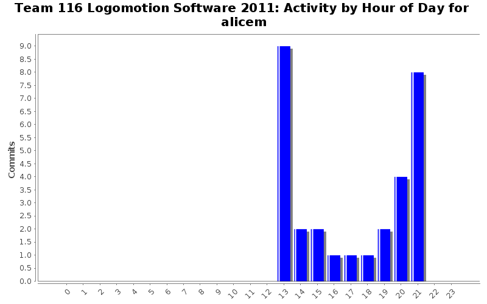

| Directory | Changes | Lines of Code | Lines per Change |
|---|---|---|---|
| / | 29 (100.0%) | 420 (100.0%) | 14.4 |
wrote code for process_endeffector and uncommented the process_minibot function
5 lines of code changed in 1 file:
added process_minibot_deployment function
16 lines of code changed in 1 file:
FFFFFFFFFFFFFFFF
0 lines of code changed in 1 file:
this is Michael :D
anyway I edited DS code to tell user what it's doing
15 lines of code changed in 1 file:
ENDEFFECTOR DOESN'T WORK, BUT IT SHOULD COMPILE.
24 lines of code changed in 2 files:
AUGH WHO MESSED WITH THE IO
24 lines of code changed in 2 files:
aughhhhhhhhhhhhhh /continuous scream
2 lines of code changed in 1 file:
checking if process_end_effector compiles. needs real output values
25 lines of code changed in 1 file:
rawr again
2 lines of code changed in 2 files:
lasgdohgosafdsahgalskhg RAWRRRRRRRRRRR
14 lines of code changed in 3 files:
added elevator_dial
2 lines of code changed in 1 file:
I hate windriver, so I'm committing this for michael to compile.
15 lines of code changed in 1 file:
ditched the macro enums and the danger status function and started on the process_end_effector and process_minibot_deployment functions. Also changed the ELEVATOR_BUTTON to ELEVATOR_DIAL
42 lines of code changed in 3 files:
blahdeeblah I hate committing
41 lines of code changed in 3 files:
derp
2 lines of code changed in 1 file:
added buttons and LEDs to the IO and got rid of a todo on DS
10 lines of code changed in 2 files:
172 lines of code changed in 2 files:
added channel numbers...I think
9 lines of code changed in 1 file: